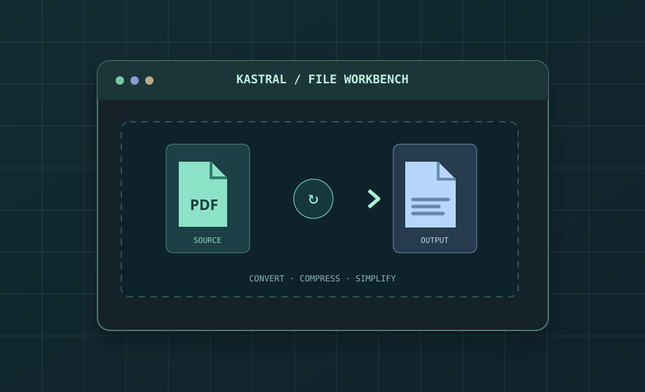
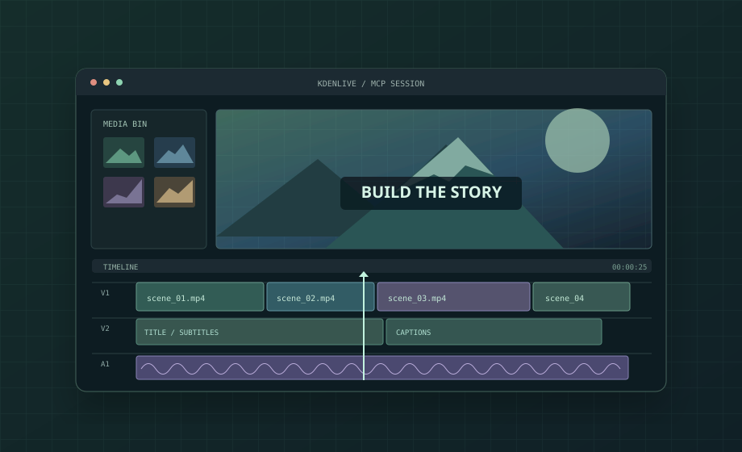

01 / FILE TOOLKIT

Kastral ↗
Plataforma web y de escritorio para convertir, comprimir y optimizar archivos. Combina Next.js y TypeScript con Rust/Tauri y procesamiento local cuando es posible.
Next.jsTypeScriptRustTauri
>_ Hola, soy Camilo. Construyo lo que imagino.
Desarrollo herramientas que conectan inteligencia artificial, automatización y creatividad. Me interesa el código útil: el que resuelve problemas y se puede explorar.
01 / SELECTED WORK
Código público, documentación técnica y problemas reales. Sin demos inventadas.

Plataforma web y de escritorio para convertir, comprimir y optimizar archivos. Combina Next.js y TypeScript con Rust/Tauri y procesamiento local cuando es posible.

Un servidor MCP para automatizar tareas de edición de video con Kdenlive, MLT y FFmpeg: proyectos, línea de tiempo, subtítulos y render.

Aplicación de terminal en Go con interfaz TUI, búsqueda de películas y series, historial y preferencias. Su compilación y pruebas tienen CI pública exitosa.
No hay proyectos que coincidan. Prueba otra búsqueda.
✳Selección basada en código público y pruebas documentadas. Kastral y cine-cli tienen CI exitosa; kdenlive-mcp cuenta con pruebas locales reportadas.
02 / HOW I BUILD
Conecto tecnologías y servicios para transformar una idea en una herramienta que se pueda probar.
Me interesan los flujos de trabajo reproducibles, los agentes MCP y reducir tareas manuales repetitivas.
Documento requisitos, pruebo lo que implemento y explico las limitaciones que todavía quedan.
03 / ABOUT
Soy Camilo, desarrollador en formación de Colombia. Me gusta entender cómo funcionan las herramientas, desarmar problemas difíciles y crear soluciones propias.
Mis proyectos abarcan automatización de video, software multiplataforma y aplicaciones de terminal. Trabajo con Python, Go, TypeScript, Rust y Linux, y sigo aprendiendo con cada versión.
HERRAMIENTAS Y TECNOLOGÍAS
¿TIENES UN PROYECTO EN MENTE?
¿Te interesa colaborar o tienes alguna propuesta? Escríbeme directamente por correo.
Enviar correo↗cuentacamilo48@gmail.com